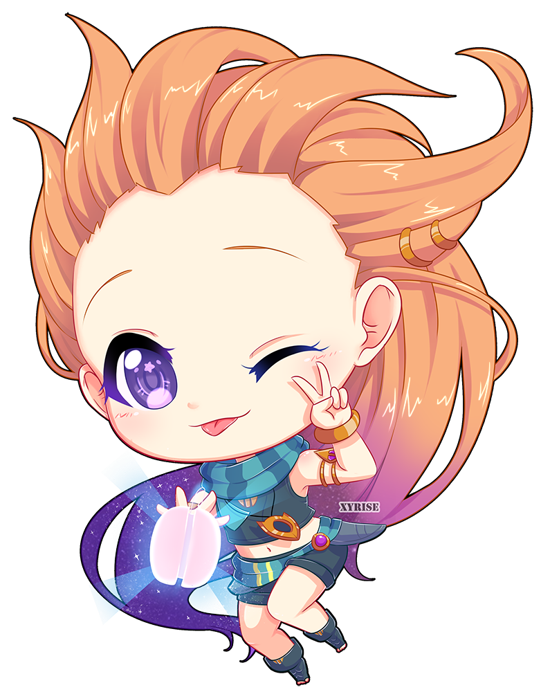
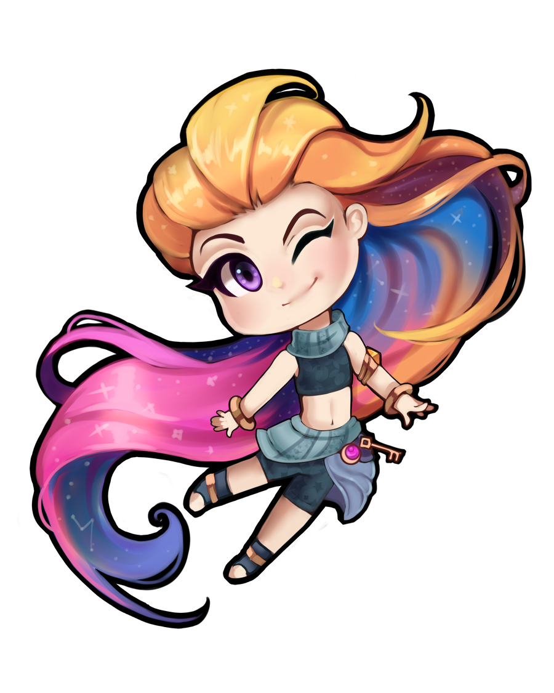
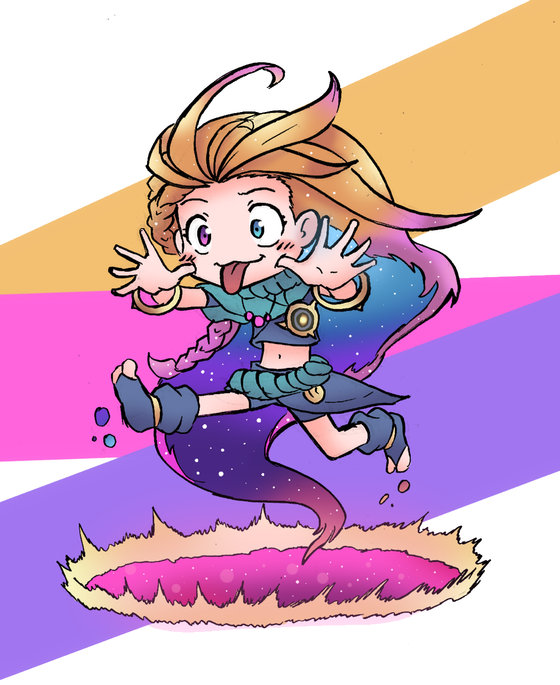
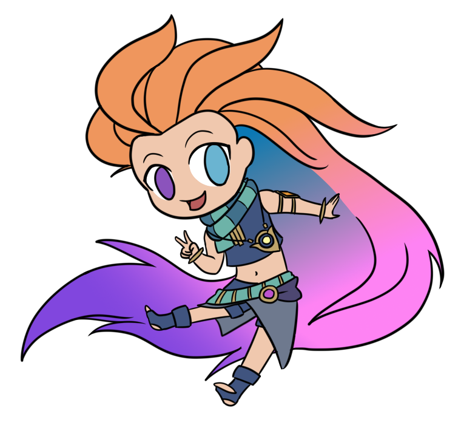
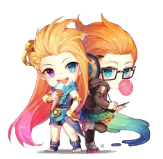

Zoe
Zoe, la mensajera cósmica de Targón, es la personificación de las travesuras, la imaginación y el cambio y, como su heraldo, anuncia grandes acontecimientos que pueden alterar a mundos enteros. Su mera presencia distorsiona las matemáticas arcanas que rigen las realidades; en ocasiones, sin ser consciente de su poder, provoca todo tipo de cataclismos. Tal vez eso explique la actitud indiferente con la cual Zoe "cumple" con su deber. Tomándose todo el tiempo de los mundos para jugar, engañar a los mortales o simplemente entretenerse a sí misma. Un encuentro con Zoe puede ser alegre y alentador, pero siempre hay algo más detrás de las apariencias y a menudo es muy peligroso.




